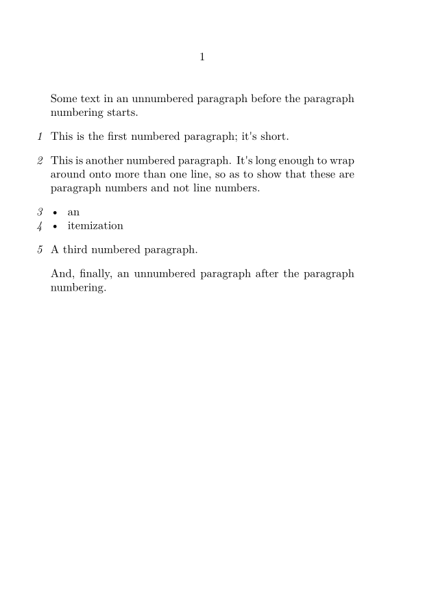
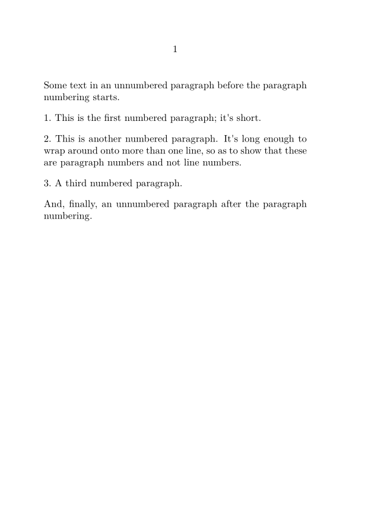
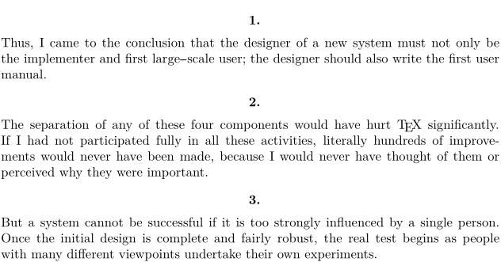
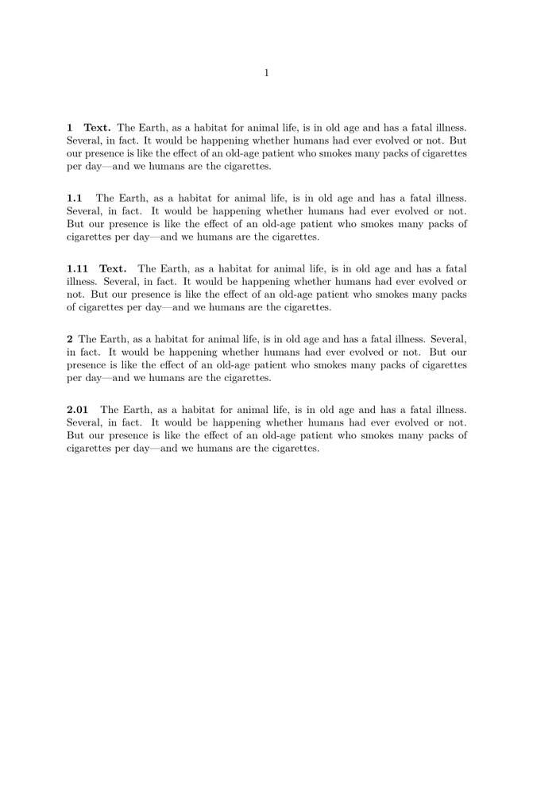

Contents
Standard Paragraph Numbering
ConTeXt has a built-in mechanism for paragraph numbering, which places numbers in the margin. This is accessed with \setupparagraphnumbering.
The mechanism numbers ‘TeX paragraphs’, so a formula or an itemization item will get its own number. For ‘block of thought’ paragraphs that can contain multiple TeX paragraphs, see the t-pararef module described at Paragraph referencing.
-
\setuppapersize[A6] \setupwhitespace[big] \starttext Some text in an unnumbered paragraph before the paragraph numbering starts. \setupparagraphnumbering[ state=start, style=italic, distance=0pt] This is the first numbered paragraph; it's short. This is another numbered paragraph. It's long enough to wrap around onto more than one line, so as to show that these are paragraph numbers and not line numbers. \startitemize[packed] \item an \item itemization \stopitemize A third numbered paragraph. \setupparagraphnumbering[state=stop] And, finally, an unnumbered paragraph after the paragraph numbering. \stoptext
- 
The \EveryPar command
An alternate way of numbering paragraphs is to use the \EveryPar command. It's a lower-level command than \setupparagraphnumbering, but allows much more flexibility.
Paragraph numbering in the text
One possible way of numbering paragraphs is to place the numbers in the running text, rather than in the margin. ConTeXt doesn't have a built-in way to do this, but it's not difficult to add a method using the \EveryPar command. The following code was proposed by Taco on the mailing list.
-
\setuppapersize[A6] \setupwhitespace[big] \definecounter[Paracount] \def\Paragraphnumber% {\incrementcounter[Paracount] \rawcountervalue[Paracount].~} \definestartstop[ParagraphNumbers][ before=\EveryPar{\Paragraphnumber}, after=\EveryPar{}, ] \starttext Some text in an unnumbered paragraph before the paragraph numbering starts. \startParagraphNumbers This is the first numbered paragraph; it's short. This is another numbered paragraph. It's long enough to wrap around onto more than one line, so as to show that these are paragraph numbers and not line numbers. A third numbered paragraph. \stopParagraphNumbers And, finally, an unnumbered paragraph after the paragraph numbering. \stoptext
- 
Paragraph numbering at the top
-
\setupwhitespace[big] % Create a new counter \definecounter[parnum][way=bytext] % Give the number some distance from the paragraph \def\deepstrut{\vrule width 0pt depth 2ex} % Will be typeset on every paragraph \def\NumberParagraph{ \incrementcounter[parnum] \midaligned{ \bf \rawcountervalue[parnum]. \deepstrut } } \EveryPar{\NumberParagraph} \input knuth
- 
Combining Section Numbering with Paragraph Numbering and Titles
Idris provided a modified version of an enumerated-paragraphs sample provided by Wolfgang. In the modified version, section numbering is combined with paragraph enumeration, with titles optional:
-
\defineseparatorset [ParagraphNumber][.,] % no second decimal for susubparagraphs % \defineseparatorset [ParagraphNumber][.,.] % second decimal for susubparagraphs \definecounter[ParagraphNumber][numberseparatorset=ParagraphNumber,criterium=all] \define\ParagraphNumber {{\bf \incrementcounter[ParagraphNumber]% \convertedcounter[ParagraphNumber][numbersegments=1]}\quad} \define\subParagraphNumber {{\bf \incrementcounter[ParagraphNumber][2]% \convertedcounter[ParagraphNumber][numbersegments=1:2]}\quad} \define\subsubParagraphNumber {{\bf \incrementcounter[ParagraphNumber][3]% \convertedcounter[ParagraphNumber][numbersegments=1:3]}\quad} \setuphead[section] [style=\bf, alternative=text, criterium=all, number=no, textcommand=\ParagraphNumber, insidesection=\hskip-0.49em] % adjust space after title \setuphead[subsection] [style=\bf, alternative=text, criterium=all, number=no, textcommand=\subParagraphNumber, insidesection=\hskip-0.49em] % adjust space after title \setuphead[subsubsection] [style=\bf, alternative=text, criterium=all, number=no, textcommand=\subsubParagraphNumber, insidesection=\hskip-0.49em] % adjust space after title \setupwhitespace[line] \starttext \startsection[title={Text.}] \input ward \startsubsection \input ward \startsubsubsection[title={Text.}] \input ward \stopsubsubsection \stopsubsection \stopsection \startsection \input ward \startsubsubsection \input ward \stopsubsubsection \stopsection \stoptext
The output from the previous code is:
- 